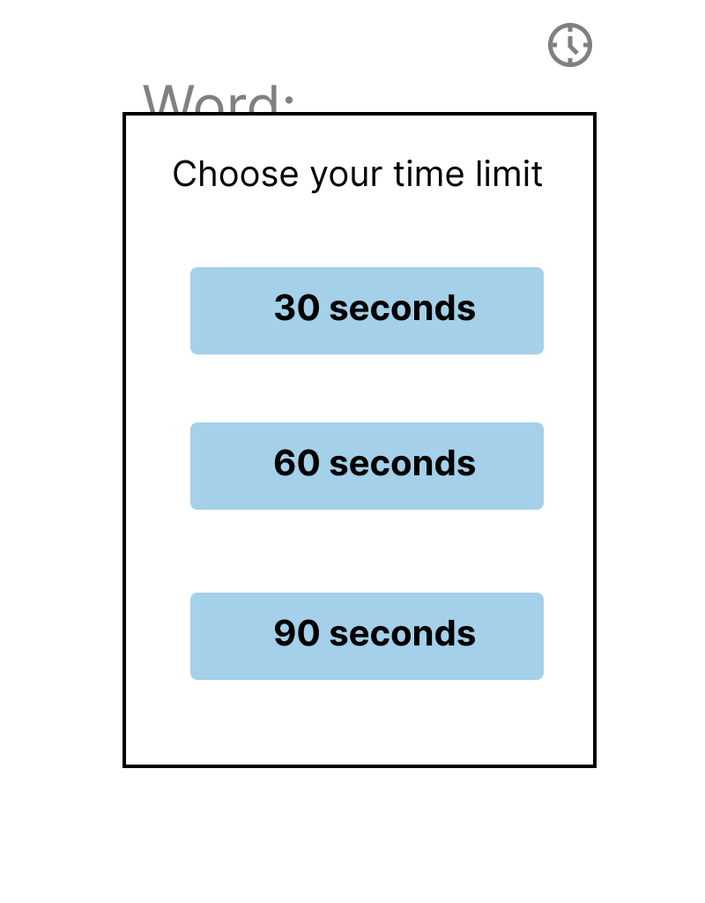
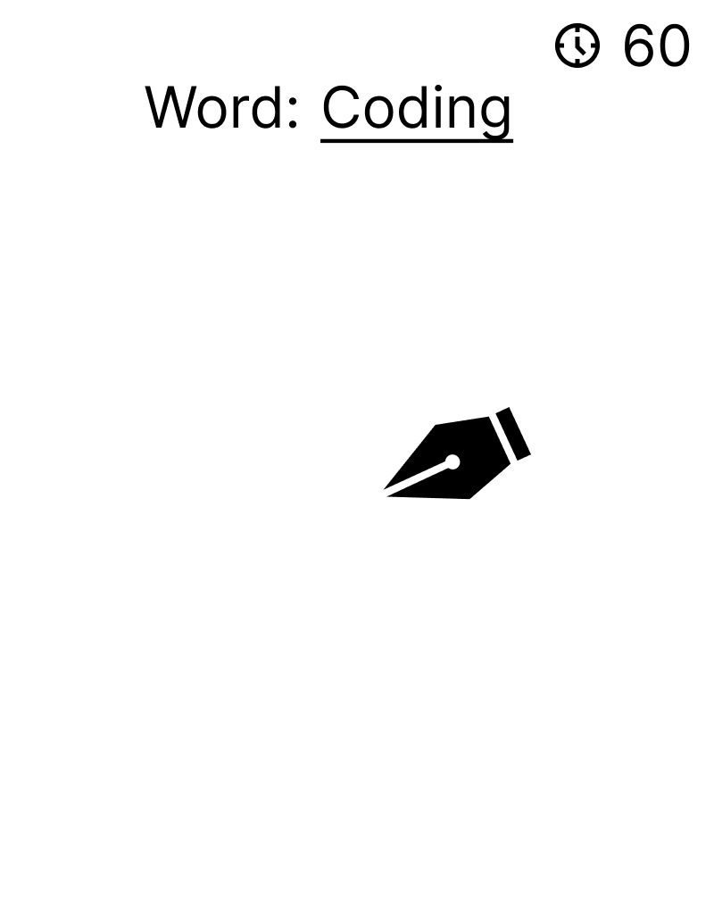

One Sentence Summary
A drawing game that generates a random word for you to draw in a chosen time limit (30, 60, 90 seconds).
Two Drawings
Intro screen

Main game screen

Descriptions of two versions of my Project
Prototype version: A minimal word bank (just testing the randomization of words)
that will cycle and upload to the interface. Once the word is selected, there will be time
ticking on the side and the user will be able to use a pen to draw the word they were given.
Pen will probably only be one color at this stage.
Final Version: A more diverse word bank. The time will most likely look a bit nicer
with potentially a clock image and the time being inside of it. Adding more colors for the
user to choose from when drawing. User will be able to select time they want.
Step by Step Plan
- Look at skribblio interface and understand components involved in the game
- Figure out how to create a word bank where a word can be randomly chosen from
- Start to code the interface in html and create a popup when the game begins for the time selection
- Have the time selected be integrated into the interface
- Implement a p5 drawing element for a mouse movement causing a drawing to appear (At this point prototype version done)
- Research how to add more colors to the pen/mouse movement in the p5 sketches
- Add the colors as well as add more words to the word bank
- Add a clock icon next to the time to make it look more polished (At this point finalized version done)
List of Knowns
- Implementation of the drawing with mouse movement in p5
- Choosing a random number (should be similar to words)
- Showing a chosen time in the interface
List of Unknowns
- Changing colors for the drawing with mouse movement
- Adding in drawings in the exact position I want it in on the interface)
List of Stretch Goals
- Choose a theme of words you want to draw
- Make the count down numbers larger once it hits 10 seconds
- Make it multiplayer